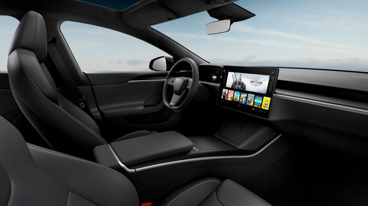

El Tesla Model S es una berlina de lujo completamente eléctrica, del segmento E fabricada por Tesla desde 2012. Aunque se trata de un producto veterano, ha sufrido ligeras actualizaciones con el paso de los años. El Tesla Model S tiene cinco plazas distribuidas en dos filas de asientos, pero opcionalmente se puede equipar con siete plazas gracias a una tercera fila con dos asientos para niños. El Tesla Model S se produce en la planta de fabricación que Tesla tiene en Fremont, California (Estados Unidos). Entre los coches eléctricos que aspiran a rivalizar con el Tesla Model S nos encontramos con modelos como el Porsche Taycan o el Audi e-tron GT, mientras que entre las berlinas premium destacarían los Audi A6, BMW Serie 5, Mercedes Clase E.

En el interior, el Tesla Model S opta por el minimalismo propio de las últimas tendencias, con el mínimo número de botones e interruptores posibles. Esto es posible gracias a la centralización de funciones a través de una gigantesca pantalla táctil que al contrario que su predecesor, abandona el formato vertical tipo tablet,
para adoptar una horizontal tipo flotante con 17 pulgadas de tamaño. La instrumentación también recurre a una pantalla completamente digital.
En cuanto al exterior Los faros, con tecnología full LED, ofrecen una firma lumínica muy característica que ha ido evolucionando ligeramente con el paso de los años, a lo que hay que añadir es imagen en la que se ha prescindido de las entradas de aire y se ha aprovechado para realizar un frontal lo más cerrado posible con el objetivo
de ganar en eficiencia aerodinámica y en autonomía
La planta de fabricación de Tesla en Fremont, California (Estados Unidos), es una de las plantas de producción de automóviles más avanzadas del mundo.
Tesla Motors es una compañía norteamericana creada en 2003 con sede en California. Bajo el mando de Elon Musk, fabrica y comercializa vehículos, así como componentes y baterías para otros fabricantes como el grupo Daimler o Toyota. Tomando el nombre del físico e ingeniero Nikola Tesla, desarrolla motores de inducción creando sistemas compactos y con un número inferior de piezas móviles que un motor térmico convencional. Así mismo, la compañía cuenta con patentes propias para su fabricación, las cuales han sido liberadas al público desde 2014.